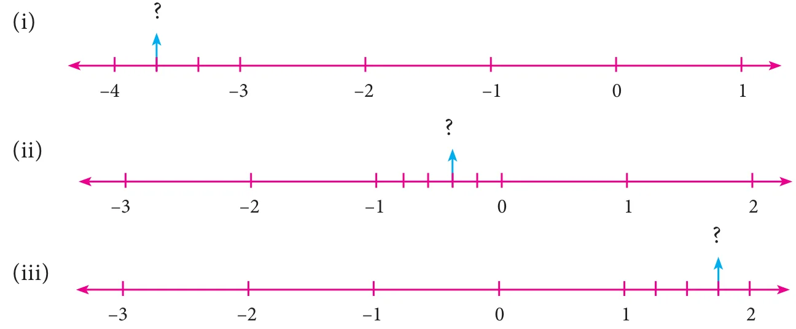
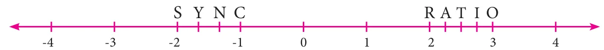

Fill in the blanks:
- \(\frac{-19}{5}\) lies between the integers \(\underline{\qquad}\) and \(\underline{\qquad}\).
- The decimal form of the rational number \(\frac{15}{-4}\) is \(\underline{\qquad}\).
- The rational numbers \(\frac{-8}{3}\) and \(\frac{8}{3}\) are equidistant from \(\underline{\qquad}\).
- The next rational number in the sequence \(\frac{-15}{24}, \frac{20}{-32}, \frac{-25}{40}\) is \(\underline{\qquad}\).
- The standard form of \(\frac{58}{-78}\) is \(\underline{\qquad}\).
Say True or False:
- 0 is the smallest rational number.
- \(\frac{-4}{5}\) lies to the left of \(\frac{-3}{4}\).
- \(\frac{-19}{5}\) is greater than \(\frac{15}{-4}\).
- The average of two rational numbers lies between them.
- There are an unlimited number of rational numbers between 10 and 11.
Find the rational numbers represented by each of the question marks marked on the following number lines.

The points S, Y, N, C, R, A, T, I and O on the number line are such that CN=NY=YS and RA=AT=TI=IO. Find the rational numbers represented by the letters Y, N, A, T and I.

Draw a number line and represent the following rational numbers on it.
(i) \(\frac{9}{4}\) (ii) \(\frac{-8}{3}\) (iii) \(\frac{-17}{-5}\) (iv) \(\frac{15}{-4}\)
Write the decimal form of the following rational numbers.
(i) \(\frac{1}{11}\) (ii) \(\frac{13}{4}\) (iii) \(\frac{-18}{7}\) (iv) \(1\frac{2}{5}\) (v) \(-3\frac{1}{2}\)
List any five rational numbers between the given rational numbers.
(i) \(-2\) and 0 (ii) \(\frac{-1}{2}\) and \(\frac{3}{5}\) (iii) \(\frac{1}{4}\) and \(\frac{7}{20}\) (iv) \(\frac{-6}{4}\) and \(\frac{-23}{10}\)
Use the method of averages to write 2 rational numbers between \(\frac{14}{5}\) and \(\frac{16}{3}\).
Compare the following pairs of rational numbers.
(i) \(\frac{-11}{5}, \frac{-21}{8}\) (ii) \(\frac{3}{-4}, \frac{-1}{2}\) (iii) \(\frac{2}{3}, \frac{4}{5}\).
Arrange the following rational numbers in ascending and descending order.
(i) \(\frac{-5}{12}, \frac{-11}{8}, \frac{-15}{24}, \frac{-7}{-9}, \frac{12}{36}\) (ii) \(\frac{-17}{10}, \frac{-7}{5}, 0, \frac{-2}{4}, \frac{-19}{20}\)
Objective Type Questions
The number which is subtracted from \(\frac{-6}{11}\) to get \(\frac{8}{9}\) is \(\underline{\qquad}\).
(A) \(\frac{34}{99}\) (B) \(\frac{-142}{99}\) (C) \(\frac{142}{99}\) (D) \(\frac{-34}{99}\)
Which of the following pairs is equivalent?
(A) \(\frac{-20}{12}, \frac{5}{3}\) (B) \(\frac{16}{-30}, \frac{-8}{15}\) (C) \(\frac{-18}{36}, \frac{-20}{44}\) (D) \(\frac{7}{-5}, \frac{-5}{7}\)
\(\frac{-5}{4}\) is a rational number which lies between \(\underline{\qquad}\).
(A) 0 and \(\frac{-5}{4}\) (B) \(-1\) and 0 (C) \(-1\) and \(-2\) (D) \(-4\) and \(-5\)
Which of the following rational numbers is the greatest?
(A) \(\frac{-17}{24}\) (B) \(\frac{-13}{16}\) (C) \(\frac{7}{-8}\) (D) \(\frac{-31}{32}\)
The sum of the digits of the denominator in the simplest form of \(\frac{112}{528}\) is \(\underline{\qquad}\).
(A) 4 (B) 5 (C) 6 (D) 7